Unidad 3. Programación orientada a objetos: clases, herencia, UML y archivos de texto
| Asignatura | Herramientas de Programación I (ET0047) |
| Programa | Tecnología en Desarrollo de Software |
| Unidad | Unidad 3. Diseño y desarrollo de aplicaciones gráficas aplicando la POO |
| Saberes | Paradigma de la POO: clases y objetos, atributos, métodos y constructores. Instanciación de objetos y acceso a atributos y métodos. Modelado de clases con UML. Manejo de archivos de texto para persistencia |
Esta guía se probó con el SDK de .NET 10.0.302.
Esta guía recorre, paso a paso, la sesión presencial de programación orientada a objetos (POO). Construyes un videojuego de consola con tres clases, lo dibujas con UML y haces que la partida sobreviva al cierre del programa guardándola en un archivo de texto. Cada bloque de código sale de un programa que se compiló y se ejecutó, y cada salida que ves es la salida real. Puedes copiar todo y seguirla en tu computador.
1 La presentación de la sesión
Esta es la presentación que se usa en clase. Avanza con la flecha derecha o con un clic y retrocede con la flecha izquierda. Haz clic dentro del cuadro antes de usar el teclado.
2 Qué vas a construir
Un videojuego pequeño con tres clases. Personaje es una clase abstracta que guarda lo que todos los personajes comparten. Guerrero y Mago heredan de ella y agregan lo suyo. Al final, la partida se guarda en un archivo partida.txt y se recupera la próxima vez que ejecutas el programa.
| Clase | Qué guarda | Qué hace |
|---|---|---|
Personaje (abstracta) |
Nombre, Vida, constante VidaMaxima = 100, EstaVivo |
RecibirDano, Curar, Atacar (sin cuerpo), ToLinea, DesdeLinea |
Guerrero |
Fuerza |
Atacar: quita tanta vida como su fuerza |
Mago |
Mana, constantes CostoMana = 10 y DanoMagico = 25 |
Atacar: gasta 10 de maná y quita 25 de vida |
El juego cumple cinco reglas de negocio. Las vas a ver aparecer una a una a lo largo de la guía:
- La vida nunca baja de 0 ni pasa de 100, y el constructor corrige los valores inválidos.
RecibirDanoresta vida con piso en 0, yCurarsuma con techo en 100.- Un personaje muerto no ataca ni se cura.
- El Guerrero ataca siempre y hace un daño igual a su fuerza.
- El Mago ataca solo si tiene 10 de maná o más. Si no,
Atacardevuelvefalsey no pasa nada.
Un mismo personaje tiene tres caras y la guía las mantiene juntas desde el principio: el plano (un diagrama UML), el código (la clase en C#) y la línea que se guarda en el archivo. Cuando termines, puedes pasar de una cara a otra sin dudar.
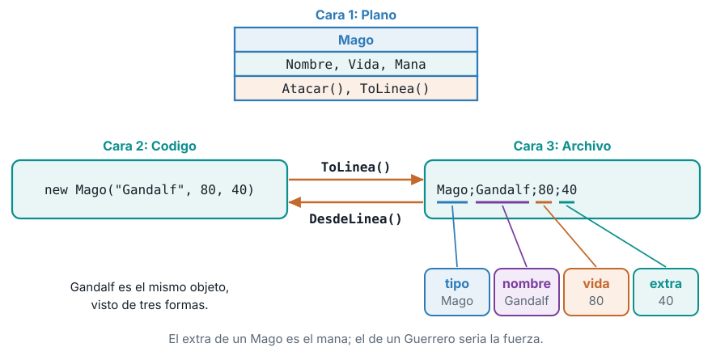
Lo que esta guía no cubre. Interfaces, excepciones con try y catch, JSON, bases de datos e interfaz gráfica. Aparecen en las semanas siguientes.
3 Antes de empezar: el proyecto
Abre una terminal y crea un proyecto de consola nuevo:
dotnet new console -n Videojuego
cd VideojuegoEl proyecto trae un archivo Program.cs. Cada clase que escribas va en su propio archivo, en la misma carpeta que Program.cs, y el nombre del archivo es el nombre de la clase. Al terminar tendrás cinco archivos:
Program.cs: el programa principal, con las instrucciones que se ejecutan.Personaje.cs: la clase base abstracta.Guerrero.cs: la clase derivada del guerrero.Mago.cs: la clase derivada del mago.Partida.cs: la clase que guarda y carga la partida.
Para ejecutar, escribe en la terminal, dentro de la carpeta Videojuego:
dotnet runLa guía avanza por etapas. En cada etapa te indico qué archivo crear o reemplazar. Reemplazar significa borrar el contenido anterior del archivo y pegar el nuevo. Las etapas cambian a Guerrero.cs y Program.cs varias veces, porque el diseño mejora conforme aprendes.
4 1. Clases y objetos
1.1 Qué tiene y qué hace un personaje
Piensa en Aragorn, un guerrero de tu videojuego. Puedes describirlo con dos listas. Lo que tiene: un nombre, una cantidad de vida y una fuerza. Lo que hace: ataca, recibe daño, se cura.
La POO organiza el programa alrededor de esa idea. En vez de dejar los datos en variables sueltas y las reglas en funciones sueltas, se agrupan en una sola pieza: datos y comportamiento viajan juntos.
- La clase es el molde. Dice qué datos y qué acciones tendrá todo guerrero. Es un plano: no es ningún guerrero concreto.
- El objeto es una pieza concreta fabricada con ese molde.
aragornyboromirson dos objetos de la misma claseGuerrero, cada uno con sus propios valores. - Los atributos son los datos que guarda cada objeto (
Nombre,Vida,Fuerza). - Los métodos son las acciones que sabe hacer (
RecibirDano,Curar,Atacar).
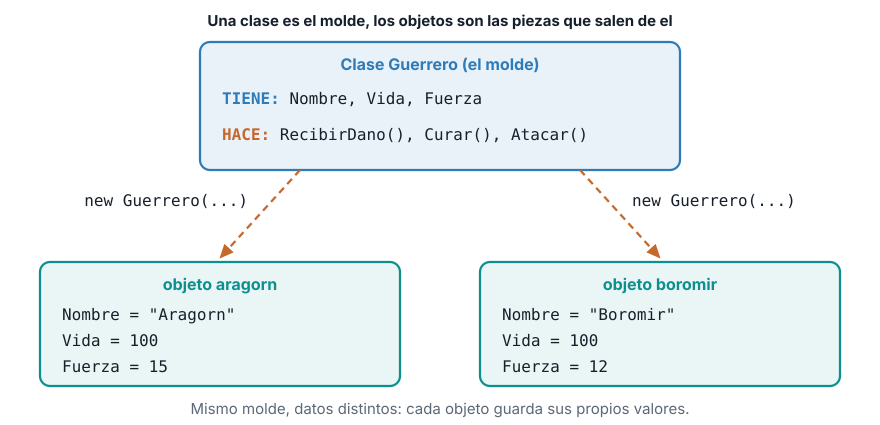
1.2 Tu primera clase
Crea el archivo Guerrero.cs con este contenido:
class Guerrero
{
public string Nombre = "";
public int Vida;
public int Fuerza;
public void RecibirDano(int dano)
{
Vida -= dano;
}
}Línea por línea:
class Guerrerodeclara la clase. Todo lo que está entre las llaves{ }pertenece al molde.public string Nombre = "";,public int Vida;ypublic int Fuerza;son los atributos.publicsignifica que cualquier parte del programa puede leerlos y cambiarlos. El= ""le da un valor inicial vacío al texto.public void RecibirDano(int dano)es un método.voidsignifica que no devuelve nada. Recibe un número,dano, y le resta esa cantidad aVida.
Ahora reemplaza Program.cs para crear un guerrero y probarlo:
var aragorn = new Guerrero();
aragorn.Nombre = "Aragorn";
aragorn.Vida = 100;
aragorn.Fuerza = 15;
aragorn.RecibirDano(120);
Console.WriteLine($"{aragorn.Nombre}: vida {aragorn.Vida}");new Guerrero() crea un objeto a partir de la clase. Después se asignan sus datos uno por uno con el operador punto (aragorn.Nombre = "Aragorn";). Al final, Aragorn recibe 120 de daño y se imprime su vida. Ejecuta con dotnet run:
Aragorn: vida -20Una vida de -20 es un error. La clase funciona, pero nada impide que la vida quede negativa. Cualquiera puede escribir aragorn.Vida = -5; y el programa lo acepta. Falta una forma de proteger los datos y de crear el objeto ya con valores válidos. Eso lo resuelven el constructor y la protección de los atributos.
1.3 El constructor y los atributos protegidos
Un constructor es un método especial que se ejecuta una sola vez, cuando se crea el objeto con new. Tiene el mismo nombre que la clase y no declara tipo de retorno. Sirve para darle al objeto valores iniciales válidos desde el primer instante.
Reemplaza Guerrero.cs con la versión completa. Primero verás las piezas por separado y después el archivo entero.
La constante. Un valor que no cambia nunca:
class Guerrero
{
public const int VidaMaxima = 100;const int VidaMaxima = 100; declara una constante. Si algún día el máximo cambia, lo cambias en un solo lugar.
Las propiedades. Los atributos pasan de campos públicos a propiedades con permisos distintos:
public string Nombre { get; }
public int Vida { get; private set; }
public int Fuerza { get; }
public bool EstaVivo => Vida > 0;{ get; }significa que cualquiera puede leer el valor, pero solo el constructor puede asignarlo.NombreyFuerzano deberían cambiar después de crear el personaje.{ get; private set; }significa que cualquiera puede leerVida, pero solo los métodos de la propia clase pueden cambiarla. Es el encapsulamiento: los datos quedan protegidos y solo se modifican por las reglas que tú escribes.EstaVivo => Vida > 0;es una propiedad calculada: no guarda nada, respondetrueofalsecada vez que se consulta.
El constructor. Recibe los datos iniciales y los valida:
public Guerrero(string nombre, int vida, int fuerza)
{
Nombre = nombre;
Vida = Math.Clamp(vida, 0, VidaMaxima);
Fuerza = fuerza;
}Math.Clamp(vida, 0, VidaMaxima) recorta el valor para que quede entre 0 y 100. Si te piden una vida de 150, el objeto nace con 100. Si te piden -20, nace con 0. Esta es la regla 1: la vida siempre es válida desde el principio.
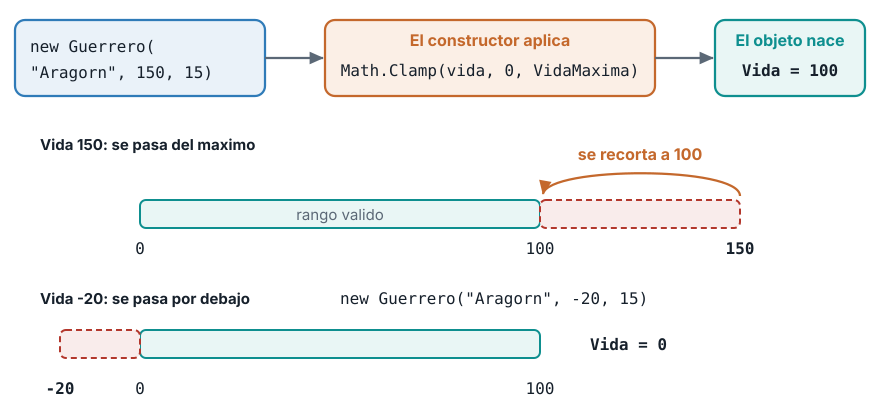
Con el constructor, crear un guerrero ya no necesita asignar campo por campo: new Guerrero("Aragorn", 100, 15) entrega un objeto listo.
Protección en acción. Como Vida tiene private set, ya no se puede escribir desde fuera. Si en Program.cs intentas:
var aragorn = new Guerrero("Aragorn", 100, 15);
aragorn.Vida = 500;
Console.WriteLine(aragorn.Vida);el compilador se niega a construir el programa. En un SDK en español el mensaje es:
Program.cs(2,1): error CS0272: La propiedad o el indizador 'Guerrero.Vida' no se pueden usar en este contexto porque el descriptor de acceso set es inaccesibleEl error aparece al compilar, antes de ejecutar. Eso es mejor que un error escondido que se descubre jugando.
1.4 Los métodos con reglas
Los métodos son donde viven las reglas de negocio. Mira los tres que cuidan la vida:
public void RecibirDano(int dano)
{
Vida = Math.Max(0, Vida - dano);
}
public void Curar(int puntos)
{
if (!EstaVivo) return;
Vida = Math.Min(VidaMaxima, Vida + puntos);
}RecibirDanoresta la vida conMath.Max(0, Vida - dano).Math.Maxdevuelve el mayor de los dos números, así que la vida nunca baja de 0. Con vida 100 y 30 de daño queda en 70. Con 120 de daño queda en 0, no en -20. Regla 2, primera parte.Curarprimero revisaif (!EstaVivo) return;. El!significa “no”: si el personaje no está vivo, el método termina sin hacer nada. Regla 3: un personaje muerto no se cura. Después suma conMath.Min(VidaMaxima, Vida + puntos), que devuelve el menor de los dos, así que la vida no pasa de 100. Regla 2, segunda parte.
Un método que termina con return; sin valor sale de inmediato. Es una cláusula de guarda: se descartan primero los casos que no aplican, y el resto del método queda sin anidar.
1.5 El método Atacar (práctica 1)
Falta la acción principal. Antes de mirar la solución, piénsala con las reglas 3 y 4: un guerrero ataca a otro guerrero y le quita tanta vida como su fuerza, pero solo si está vivo. El método debe devolver true si el ataque ocurrió y false si no.
Pistas. La firma empieza con public bool Atacar(Guerrero objetivo). Usa una cláusula de guarda con EstaVivo. Para quitar vida, llama al método que ya existe en el objetivo.
Solución:
public bool Atacar(Guerrero objetivo)
{
if (!EstaVivo) return false;
objetivo.RecibirDano(Fuerza);
return true;
}objetivo.RecibirDano(Fuerza) hace que el otro guerrero se aplique el daño con sus propias reglas. Por eso la vida del objetivo nunca queda negativa: la regla vive en RecibirDano y no se repite aquí.
El archivo Guerrero.cs completo de esta etapa queda así:
class Guerrero
{
public const int VidaMaxima = 100;
public string Nombre { get; }
public int Vida { get; private set; }
public int Fuerza { get; }
public bool EstaVivo => Vida > 0;
public Guerrero(string nombre, int vida, int fuerza)
{
Nombre = nombre;
Vida = Math.Clamp(vida, 0, VidaMaxima);
Fuerza = fuerza;
}
public void RecibirDano(int dano)
{
Vida = Math.Max(0, Vida - dano);
}
public void Curar(int puntos)
{
if (!EstaVivo) return;
Vida = Math.Min(VidaMaxima, Vida + puntos);
}
public bool Atacar(Guerrero objetivo)
{
if (!EstaVivo) return false;
objetivo.RecibirDano(Fuerza);
return true;
}
}5 2. Instanciar objetos y usar sus miembros
2.1 Qué hace new y qué es una referencia
Instanciar es crear un objeto concreto a partir de una clase. En C# se hace con new. Reemplaza Program.cs:
var aragorn = new Guerrero("Aragorn", 100, 15);
var boromir = new Guerrero("Boromir", 100, 12);
var copia = aragorn;
aragorn.RecibirDano(30);
Console.WriteLine($"{aragorn.Nombre}: vida {aragorn.Vida}");
Console.WriteLine($"{boromir.Nombre}: vida {boromir.Vida}");
Console.WriteLine($"{copia.Nombre}: vida {copia.Vida}");Cuando C# ejecuta new Guerrero("Aragorn", 100, 15), pasan tres cosas en orden: reserva espacio en memoria para el objeto, ejecuta el constructor con los datos que le diste y entrega la referencia, que es la dirección donde vive el objeto. La variable aragorn no contiene al guerrero. Contiene la referencia que apunta a él.
Eso explica la tercera línea del programa. var copia = aragorn; no crea otro guerrero: copia la referencia. Ahora aragorn y copia son dos nombres para el mismo objeto. Cuando aragorn recibe 30 de daño, copia también lo ve. Ejecuta y compara con tu predicción:
Aragorn: vida 70
Boromir: vida 100
Aragorn: vida 70Boromir conserva su vida de 100 porque es otro objeto, y copia imprime Aragorn: vida 70 porque apunta al mismo.
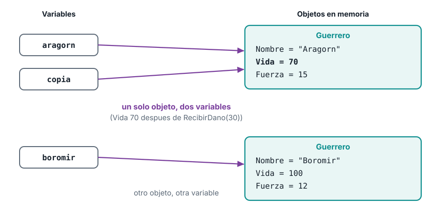
Creer que var copia = aragorn; hace una copia independiente. Para tener dos guerreros distintos, cada uno se crea con su propio new.
2.2 Acceder a atributos y métodos con el operador punto
Una vez que tienes un objeto, el operador punto (.) te deja usar lo que tiene por dentro:
aragorn.Nombrelee un atributo.aragorn.Atacar(boromir)llama un método.
Un método se llama con paréntesis y entre ellos van los datos que necesita. Los atributos se leen sin paréntesis. Reemplaza Program.cs:
var aragorn = new Guerrero("Aragorn", 100, 15);
var boromir = new Guerrero("Boromir", 100, 12);
bool acierto = aragorn.Atacar(boromir);
Console.WriteLine($"{aragorn.Nombre} ataca a {boromir.Nombre}: {acierto}");
Console.WriteLine($"{boromir.Nombre}: vida {boromir.Vida}");Línea por línea: aragorn.Atacar(boromir) hace que Aragorn ataque a Boromir. El método devuelve true y esa respuesta se guarda en la variable acierto. Después se imprimen dos líneas leyendo atributos con el punto. Salida:
Aragorn ataca a Boromir: True
Boromir: vida 85Aragorn tiene fuerza 15, así que a Boromir le quedan 100 - 15 = 85. El ataque cambió el estado de boromir y no el de aragorn.
6 3. Herencia y polimorfismo
3.1 El problema: llega el Mago
Quieres sumar al Mago. Necesita casi lo mismo que el Guerrero: nombre, vida, RecibirDano, Curar, EstaVivo. Solo cambian dos cosas: en lugar de Fuerza tiene Mana, y su Atacar funciona distinto.
Si copias y pegas la clase Guerrero, quedan dos clases con cinco miembros idénticos. Cada cambio de una regla obliga a corregir las dos. Con un tercer personaje, serían tres copias.
Hay un segundo problema. Guerrero.Atacar recibe un Guerrero como objetivo. Un mago no podría atacar a un guerrero y un guerrero no podría atacar a un mago, porque cada clase solo conoce a la suya.
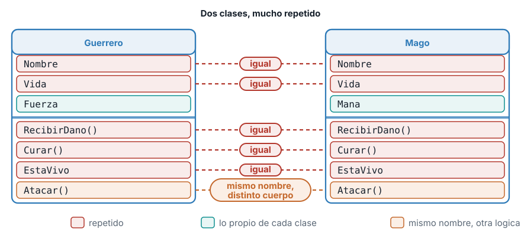
La solución es la herencia: se escribe lo común una sola vez en una clase base, y las clases derivadas lo reciben automáticamente y agregan lo suyo.
3.2 La clase base abstracta
Crea el archivo Personaje.cs:
abstract class Personaje
{
public const int VidaMaxima = 100;
public string Nombre { get; }
public int Vida { get; private set; }
public bool EstaVivo => Vida > 0;
protected Personaje(string nombre, int vida)
{
Nombre = nombre;
Vida = Math.Clamp(vida, 0, VidaMaxima);
}
public void RecibirDano(int dano)
{
Vida = Math.Max(0, Vida - dano);
}
public void Curar(int puntos)
{
if (!EstaVivo) return;
Vida = Math.Min(VidaMaxima, Vida + puntos);
}
public abstract bool Atacar(Personaje objetivo);
}Lo que cambió respecto a Guerrero:
abstract class Personajemarca la clase como abstracta: no se puede instanciar connew Personaje(...). Es un molde general, pensado solo para que otras clases hereden de él.- El constructor es
protected: solo la propia clase y sus derivadas pueden usarlo. Nombre,Vida,EstaVivo,RecibirDanoyCurarpasaron aquí sin cambios. Es lo que antes estaba repetido.- La última línea es lo más importante:
public abstract bool Atacar(Personaje objetivo);. Un método abstracto no tiene cuerpo. Dice “todos los personajes atacan y devuelvenbool”, pero deja a cada clase derivada la tarea de decir cómo. El objetivo es unPersonaje, así que cualquier personaje puede atacar a cualquier otro.
3.3 Las clases derivadas
Reemplaza Guerrero.cs. Los dos puntos y el nombre de la base (: Personaje) expresan “hereda de”:
class Guerrero : Personaje
{
public int Fuerza { get; }
public Guerrero(string nombre, int vida, int fuerza) : base(nombre, vida)
{
Fuerza = fuerza;
}
public override bool Atacar(Personaje objetivo)
{
if (!EstaVivo) return false;
objetivo.RecibirDano(Fuerza);
return true;
}
}class Guerrero : Personajehace queGuerreroreciba todo lo público dePersonaje. No repitesNombreniVida.: base(nombre, vida)en el constructor llama al constructor de la base para armar la parte común. El guerrero solo guarda lo suyo: la fuerza.public override bool Atacar(...)sobrescribe el método abstracto con su propio cuerpo. La palabraoverridees obligatoria. El método hace lo mismo que antes: ataca solo si está vivo y quita tanta vida como su fuerza (regla 4).
Crea el archivo Mago.cs:
class Mago : Personaje
{
public const int CostoMana = 10;
public const int DanoMagico = 25;
public int Mana { get; private set; }
public Mago(string nombre, int vida, int mana) : base(nombre, vida)
{
Mana = Math.Max(0, mana);
}
public override bool Atacar(Personaje objetivo)
{
if (!EstaVivo || Mana < CostoMana) return false;
Mana -= CostoMana;
objetivo.RecibirDano(DanoMagico);
return true;
}
}El mago hereda lo común igual que el guerrero y agrega lo suyo: su maná y dos constantes. Su Atacar es distinto: revisa Mana < CostoMana, y si no hay maná suficiente, devuelve false y no hace nada. Si hay, gasta 10 de maná y quita 25 de vida (regla 5).
Fíjate en que Atacar aparece con el mismo nombre y la misma firma en las tres clases. Lo que cambia es el cuerpo.
3.4 Polimorfismo: un mensaje, muchos resultados
Reemplaza Program.cs:
var orco = new Guerrero("Orco", 100, 8);
var aragorn = new Guerrero("Aragorn", 100, 15);
var gandalf = new Mago("Gandalf", 80, 15);
Personaje[] equipo = { aragorn, gandalf, gandalf };
foreach (Personaje p in equipo)
{
Console.WriteLine($"{p.Nombre} ataca: {p.Atacar(orco)}");
}
Console.WriteLine($"{orco.Nombre}: vida {orco.Vida}");La clave está en el arreglo Personaje[] equipo. Guarda un guerrero y dos veces el mago, pero su tipo es Personaje, y las dos clases derivadas son personajes. Dentro del foreach, la variable p es un Personaje, y la llamada p.Atacar(orco) ejecuta la versión de la clase real del objeto. Eso se llama polimorfismo: una misma llamada hace cosas distintas según quién la recibe. Ejecuta:
Aragorn ataca: True
Gandalf ataca: True
Gandalf ataca: False
Orco: vida 60Sigue las líneas una por una. Aragorn ataca y quita 15, así que el orco queda en 85. Gandalf tiene 15 de maná, ataca y gasta 10 (queda con 5), y le quita 25, así que el orco queda en 60. En la tercera vuelta Gandalf intenta atacar otra vez con solo 5 de maná: Atacar devuelve False y no cambia nada. El orco termina en 60.
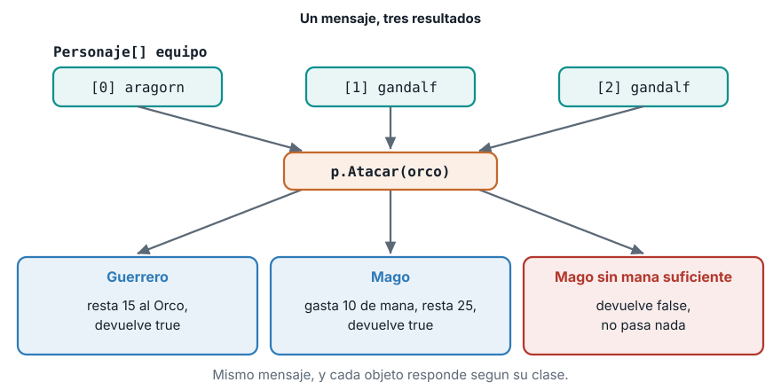
El código que llama no necesita saber si el personaje es guerrero o mago. Mañana puedes crear un Arquero y el foreach seguirá funcionando sin tocarlo.
7 4. Modelado de clases con UML
4.1 Por qué dibujar antes de programar
UML (Unified Modeling Language) es un lenguaje gráfico estándar para dibujar el diseño de un programa. Un diagrama de clases muestra qué clases hay, qué guarda cada una, qué sabe hacer y cómo se relacionan. Dibujarlo antes de programar te deja discutir el diseño sin escribir código, y dibujarlo después te sirve de documentación.
4.2 La caja de una clase
Una clase se dibuja como una caja con tres compartimentos, de arriba abajo: el nombre, los atributos y los métodos. Esta es la caja de Personaje:
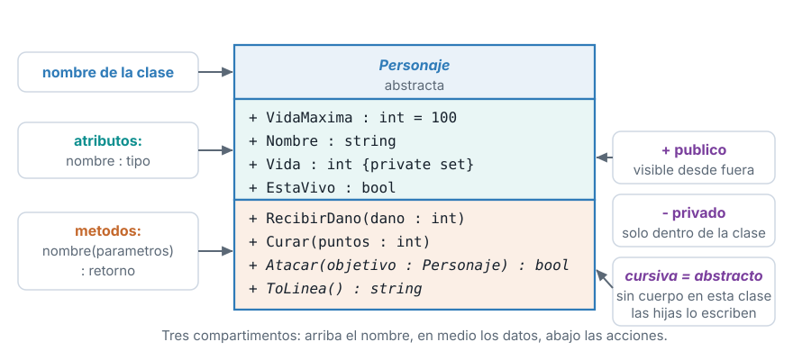
La notación que usarás todo el semestre:
| Se escribe | Significa | Ejemplo en Personaje |
|---|---|---|
+ |
público: cualquiera lo puede usar | + Nombre : string |
- |
privado: solo la propia clase | - campo : tipo |
nombre : tipo |
un atributo con su tipo | + Vida : int {private set} |
nombre(parámetros) : retorno |
un método con lo que recibe y devuelve | + Curar(puntos : int) |
= valor |
valor inicial o constante | + VidaMaxima : int = 100 |
| Nombre en cursiva | clase abstracta | Personaje |
| Método en cursiva | método abstracto | Atacar(objetivo : Personaje) : bool |
En C#, Vida se puede leer desde fuera pero solo se cambia desde dentro. Se dibuja como + Vida : int {private set}: público para leer, con la nota de que el set es privado.
4.3 Relaciones: la herencia
Las clases rara vez viven solas. La relación que ya conoces es la herencia (también llamada generalización). Se dibuja con una línea continua que termina en un triángulo hueco apuntando a la clase base, y se lee “es un”: un Guerrero es un Personaje.
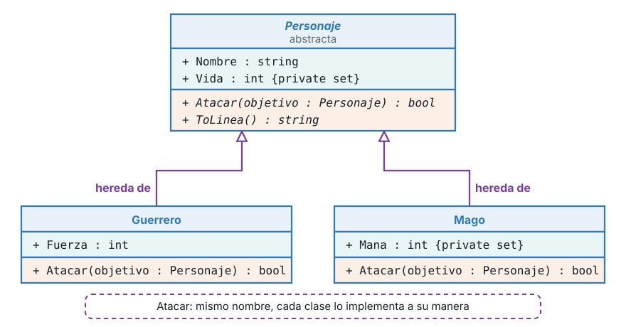
Observa tres detalles del dibujo. Las clases derivadas no repiten Nombre, Vida ni RecibirDano: ya vienen de la base. Atacar sí aparece en las dos derivadas, porque cada una lo sobrescribe con su propio cuerpo. Y la flecha siempre apunta de la clase específica hacia la general.
Con solo tres clases no aparece otra relación habitual, la asociación, que se dibuja con una línea simple entre dos clases y significa “una clase usa a otra”. Más adelante, cuando un Equipo use Personaje, la verás.
4.4 Del código al plano y del plano al código (práctica 2)
Un buen modelador mueve la información en las dos direcciones. Esta tabla te sirve de guía:
| En el código | En la caja UML |
|---|---|
class Mago : Personaje |
Una caja Mago con una flecha de herencia hacia Personaje |
public const int CostoMana = 10; |
+ CostoMana : int = 10 en atributos |
public int Mana { get; private set; } |
+ Mana : int {private set} en atributos |
public override bool Atacar(Personaje objetivo) |
+ Atacar(objetivo : Personaje) : bool en métodos |
Dibuja en tu cuaderno la caja UML de la clase Mago a partir de este archivo, sin mirar el diagrama de arriba:
class Mago : Personaje
{
public const int CostoMana = 10;
public const int DanoMagico = 25;
public int Mana { get; private set; }
public Mago(string nombre, int vida, int mana) : base(nombre, vida)
{
Mana = Math.Max(0, mana);
}
public override bool Atacar(Personaje objetivo)
{
if (!EstaVivo || Mana < CostoMana) return false;
Mana -= CostoMana;
objetivo.RecibirDano(DanoMagico);
return true;
}
}Solución. Nombre: Mago, con una flecha de herencia hacia Personaje. Atributos: + CostoMana : int = 10, + DanoMagico : int = 25 y + Mana : int {private set}. Métodos: + Atacar(objetivo : Personaje) : bool. No dibujes Nombre, Vida ni RecibirDano: pertenecen a Personaje.
8 5. Persistencia en archivos de texto
5.1 El problema: la memoria se olvida
Ejecuta el programa, deja a Aragorn herido, ciérralo y vuelve a abrirlo: Aragorn tiene otra vez 100 de vida. Todo lo que está en variables y objetos vive en la memoria (RAM), y la memoria se borra cuando el programa termina.
La persistencia es guardar los datos fuera de la memoria, en el disco, para que sobrevivan. La forma más simple es un archivo de texto: un archivo que puedes abrir con el Bloc de notas y leer con tus ojos.
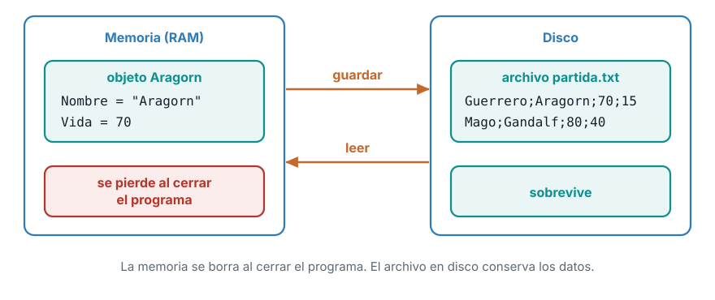
5.2 Decidir el formato del archivo
Un archivo de texto no sabe nada de objetos: solo guarda líneas. Tienes que decidir cómo convertir un objeto en una línea y cómo convertir una línea de nuevo en un objeto. El formato que usaremos tiene cuatro campos separados por punto y coma:
Tipo;Nombre;Vida;ExtraExtra es la fuerza si es un guerrero y el maná si es un mago. Un ejemplo con dos personajes:
Guerrero;Aragorn;70;15
Mago;Gandalf;80;40El primer campo, el tipo, es indispensable: sin él, al leer no sabrías si crear un Guerrero o un Mago.
5.3 De objeto a línea: ToLinea
Cada clase sabe cómo convertirse en texto. En la base se declara el método abstracto y en cada derivada se escribe:
public abstract string ToLinea(); public override string ToLinea() => $"Guerrero;{Nombre};{Vida};{Fuerza}"; public override string ToLinea() => $"Mago;{Nombre};{Vida};{Mana}";El => es una forma corta de escribir un método que devuelve un valor: significa “devuelve esto”. El texto entre comillas con $ y llaves { } es una cadena interpolada: C# reemplaza cada {Nombre} por su valor. Agrega esa línea al final de las clases Guerrero y Mago (antes de la llave de cierre de la clase) y la declaración abstracta en Personaje.
5.4 De línea a objeto: DesdeLinea
La operación inversa es más delicada, porque la línea puede estar mal escrita. Va como método estático de Personaje (un método que se llama con el nombre de la clase, sin necesidad de un objeto):
public static Personaje? DesdeLinea(string linea)
{
string[] partes = linea.Split(';');
if (partes.Length != 4) return null;
if (!int.TryParse(partes[2], out int vida)) return null;
if (!int.TryParse(partes[3], out int extra)) return null;
return partes[0] switch
{
"Guerrero" => new Guerrero(partes[1], vida, extra),
"Mago" => new Mago(partes[1], vida, extra),
_ => null
};
}Paso a paso:
linea.Split(';')parte el texto en pedazos por cada punto y coma y entrega un arreglo de cuatrostring.- Si no hay exactamente cuatro pedazos, la línea es inválida:
return null;.nullsignifica “no hay objeto”. Por eso el retorno se declaraPersonaje?, con el signo de interrogación. int.TryParse(partes[2], out int vida)intenta convertir el texto en número. Devuelvetruesi pudo y deja el número envida; devuelvefalsesi el texto no es un número. Si falla, tambiénreturn null;.- El
switchmira el primer pedazo, el tipo, y crea la clase correcta connew. Si el tipo no se conoce,_ => null.
5.5 Guardar la partida: escribir un archivo
Crea el archivo Partida.cs. Primero, el método que guarda:
public static void Guardar(List<Personaje> personajes, string ruta)
{
using var escritor = new StreamWriter(ruta);
foreach (Personaje p in personajes)
{
escritor.WriteLine(p.ToLinea());
}
}new StreamWriter(ruta)abre el archivo para escribir (lo crea si no existe y lo reemplaza si existe). Un flujo (stream) es el canal por el que viaja el texto entre el programa y el archivo.using vargarantiza que el archivo se cierre solo al terminar el método, aunque algo salga mal. Si no cierras un archivo, puede quedar bloqueado o sin guardar el final.- El
foreachrecorre la lista y escribe cada personaje conWriteLine(p.ToLinea()): una línea por personaje.
5.6 Cargar la partida: leer un archivo
Ahora, el método que lee:
public static List<Personaje> Cargar(string ruta)
{
var personajes = new List<Personaje>();
if (!File.Exists(ruta)) return personajes;
using var lector = new StreamReader(ruta);
string? linea;
while ((linea = lector.ReadLine()) != null)
{
Personaje? p = Personaje.DesdeLinea(linea);
if (p != null) personajes.Add(p);
}
return personajes;
}if (!File.Exists(ruta)) return personajes;revisa antes si el archivo existe. La primera vez que juegas no hay partida guardada, y eso no es un error: se devuelve una lista vacía.new StreamReader(ruta)abre el archivo para leer, también conusing var.while ((linea = lector.ReadLine()) != null)lee una línea, la guarda enlineay repite mientras queden líneas.ReadLine()devuelvenullcuando se acabaron.- Cada línea pasa por
Personaje.DesdeLinea. Si devuelvenull(línea dañada), se descarta y la carga continúa con las demás.
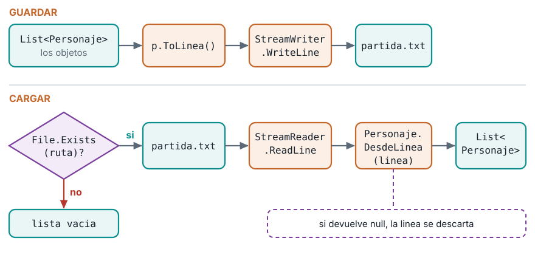
El archivo Partida.cs completo:
static class Partida
{
public static void Guardar(List<Personaje> personajes, string ruta)
{
using var escritor = new StreamWriter(ruta);
foreach (Personaje p in personajes)
{
escritor.WriteLine(p.ToLinea());
}
}
public static List<Personaje> Cargar(string ruta)
{
var personajes = new List<Personaje>();
if (!File.Exists(ruta)) return personajes;
using var lector = new StreamReader(ruta);
string? linea;
while ((linea = lector.ReadLine()) != null)
{
Personaje? p = Personaje.DesdeLinea(linea);
if (p != null) personajes.Add(p);
}
return personajes;
}
}5.7 El programa completo: dos ejecuciones, una partida
Reemplaza Program.cs. El programa carga la partida, si existe; si no, crea una nueva. Después hiere a Aragorn, guarda y muestra la vida:
const string Ruta = "partida.txt";
List<Personaje> equipo = Partida.Cargar(Ruta);
if (equipo.Count == 0)
{
equipo.Add(new Guerrero("Aragorn", 100, 15));
equipo.Add(new Mago("Gandalf", 80, 40));
Console.WriteLine("Partida nueva");
}
else
{
Console.WriteLine("Partida cargada");
}
equipo[0].RecibirDano(30);
Partida.Guardar(equipo, Ruta);
foreach (Personaje p in equipo)
{
Console.WriteLine($"{p.Nombre}: vida {p.Vida}");
}Ejecuta dotnet run por primera vez. No hay archivo, así que la partida es nueva:
Partida nueva
Aragorn: vida 70
Gandalf: vida 80Mira la carpeta del proyecto: apareció partida.txt. Ábrelo con el Bloc de notas: tiene Guerrero;Aragorn;70;15 y Mago;Gandalf;80;40. Ahora ejecuta dotnet run por segunda vez:
Partida cargada
Aragorn: vida 40
Gandalf: vida 80El programa dice Partida cargada. Aragorn empezó con 70 (leído del archivo), recibió otros 30 y quedó en 40. El juego recuerda. Para empezar de cero, borra partida.txt.
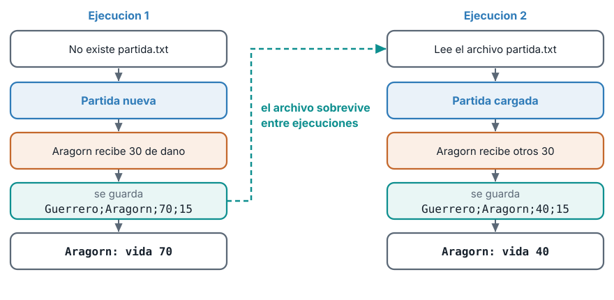
5.8 Cuando el archivo falla
Un archivo es un dato que viene de fuera del programa, y los datos de fuera pueden estar mal. La guía ya maneja dos casos:
- El archivo no existe.
File.Existslo detecta yCargardevuelve una lista vacía. - Una línea está dañada.
DesdeLineadevuelvenully esa línea se ignora.
Compruébalo. Crea un archivo danada.txt en la carpeta del proyecto con estas dos líneas. En la segunda, el ochenta no es un número:
Guerrero;Aragorn;70;15
Mago;Gandalf;ochenta;40Reemplaza Program.cs para cargar ese archivo:
List<Personaje> cargados = Partida.Cargar("danada.txt");
Console.WriteLine($"Personajes cargados: {cargados.Count}");
foreach (Personaje p in cargados)
{
Console.WriteLine($"{p.Nombre}: vida {p.Vida}");
}Ejecuta:
Personajes cargados: 1
Aragorn: vida 70Cargó solo un personaje: Aragorn. La línea de Gandalf se descartó porque int.TryParse no pudo convertir ochenta, y el programa siguió sin caerse.
5.9 Las tres caras del mismo objeto
Vuelve al diagrama del principio. Gandalf existe como plano (la caja UML de Mago), como código (new Mago("Gandalf", 80, 40)) y como línea (Mago;Gandalf;80;40). ToLinea lleva del código a la línea y DesdeLinea regresa. Si el formato del archivo que escribe ToLinea no coincide con el que lee DesdeLinea, la carga descarta todo. Los dos métodos deben cambiar juntos.
9 6. Reto: agrega un Arquero
La herencia y el archivo ya hacen lo difícil. Para comprobar que entendiste el diseño, agrega una clase nueva sin tocar el foreach del polimorfismo.
Reglas. El Arquero hereda de Personaje y tiene Flechas. Su Atacar quita 12 de vida y gasta una flecha. Si no quedan flechas o está muerto, devuelve false. Debe guardarse y cargarse con el formato Arquero;Nombre;Vida;Flechas.
Pistas. Copia la estructura de Mago. Necesitas una línea nueva en el switch de DesdeLinea.
Solución. Crea Arquero.cs:
class Arquero : Personaje
{
public const int DanoFlecha = 12;
public int Flechas { get; private set; }
public Arquero(string nombre, int vida, int flechas) : base(nombre, vida)
{
Flechas = Math.Max(0, flechas);
}
public override bool Atacar(Personaje objetivo)
{
if (!EstaVivo || Flechas == 0) return false;
Flechas--;
objetivo.RecibirDano(DanoFlecha);
return true;
}
public override string ToLinea() => $"Arquero;{Nombre};{Vida};{Flechas}";
}Agrega una línea al switch de Personaje.DesdeLinea:
return partes[0] switch
{
"Guerrero" => new Guerrero(partes[1], vida, extra),
"Mago" => new Mago(partes[1], vida, extra),
"Arquero" => new Arquero(partes[1], vida, extra),
_ => null
};Y prueba con este Program.cs:
var legolas = new Arquero("Legolas", 90, 1);
var orco = new Guerrero("Orco", 100, 8);
Console.WriteLine(legolas.Atacar(orco));
Console.WriteLine(legolas.Atacar(orco));
Console.WriteLine($"Orco: vida {orco.Vida}");
var equipo = new List<Personaje> { legolas, orco };
Partida.Guardar(equipo, "partida.txt");
foreach (Personaje p in Partida.Cargar("partida.txt"))
{
Console.WriteLine(p.ToLinea());
}Salida:
True
False
Orco: vida 88
Arquero;Legolas;90;0
Guerrero;Orco;88;8Legolas tiene una sola flecha: el primer ataque funciona (True), el segundo no (False). El orco queda en 88 (100 menos 12), y el archivo guarda a Legolas con 0 flechas.
10 Código completo del proyecto
Esta es la versión final de los cinco archivos, la que produce las dos ejecuciones de la sección 5.7. Copia cada archivo en su pestaña a la carpeta del proyecto.
abstract class Personaje
{
public const int VidaMaxima = 100;
public string Nombre { get; }
public int Vida { get; private set; }
public bool EstaVivo => Vida > 0;
protected Personaje(string nombre, int vida)
{
Nombre = nombre;
Vida = Math.Clamp(vida, 0, VidaMaxima);
}
public void RecibirDano(int dano)
{
Vida = Math.Max(0, Vida - dano);
}
public void Curar(int puntos)
{
if (!EstaVivo) return;
Vida = Math.Min(VidaMaxima, Vida + puntos);
}
public abstract bool Atacar(Personaje objetivo);
public abstract string ToLinea();
public static Personaje? DesdeLinea(string linea)
{
string[] partes = linea.Split(';');
if (partes.Length != 4) return null;
if (!int.TryParse(partes[2], out int vida)) return null;
if (!int.TryParse(partes[3], out int extra)) return null;
return partes[0] switch
{
"Guerrero" => new Guerrero(partes[1], vida, extra),
"Mago" => new Mago(partes[1], vida, extra),
_ => null
};
}
}class Guerrero : Personaje
{
public int Fuerza { get; }
public Guerrero(string nombre, int vida, int fuerza) : base(nombre, vida)
{
Fuerza = fuerza;
}
public override bool Atacar(Personaje objetivo)
{
if (!EstaVivo) return false;
objetivo.RecibirDano(Fuerza);
return true;
}
public override string ToLinea() => $"Guerrero;{Nombre};{Vida};{Fuerza}";
}class Mago : Personaje
{
public const int CostoMana = 10;
public const int DanoMagico = 25;
public int Mana { get; private set; }
public Mago(string nombre, int vida, int mana) : base(nombre, vida)
{
Mana = Math.Max(0, mana);
}
public override bool Atacar(Personaje objetivo)
{
if (!EstaVivo || Mana < CostoMana) return false;
Mana -= CostoMana;
objetivo.RecibirDano(DanoMagico);
return true;
}
public override string ToLinea() => $"Mago;{Nombre};{Vida};{Mana}";
}static class Partida
{
public static void Guardar(List<Personaje> personajes, string ruta)
{
using var escritor = new StreamWriter(ruta);
foreach (Personaje p in personajes)
{
escritor.WriteLine(p.ToLinea());
}
}
public static List<Personaje> Cargar(string ruta)
{
var personajes = new List<Personaje>();
if (!File.Exists(ruta)) return personajes;
using var lector = new StreamReader(ruta);
string? linea;
while ((linea = lector.ReadLine()) != null)
{
Personaje? p = Personaje.DesdeLinea(linea);
if (p != null) personajes.Add(p);
}
return personajes;
}
}const string Ruta = "partida.txt";
List<Personaje> equipo = Partida.Cargar(Ruta);
if (equipo.Count == 0)
{
equipo.Add(new Guerrero("Aragorn", 100, 15));
equipo.Add(new Mago("Gandalf", 80, 40));
Console.WriteLine("Partida nueva");
}
else
{
Console.WriteLine("Partida cargada");
}
equipo[0].RecibirDano(30);
Partida.Guardar(equipo, Ruta);
foreach (Personaje p in equipo)
{
Console.WriteLine($"{p.Nombre}: vida {p.Vida}");
}11 Errores frecuentes
| Error | Qué pasa | Cómo se corrige |
|---|---|---|
| Confundir clase con objeto | Intentar usar Guerrero.Vida sin crear un guerrero |
Primero new Guerrero(...), después se usa el objeto |
Olvidar new |
El compilador marca que la variable no tiene valor | var aragorn = new Guerrero(...) |
Creer que copia = aragorn crea otro objeto |
Los dos nombres cambian juntos | Crear cada objeto con su propio new |
Escribir Atacar sin override en la derivada |
Error de compilación | Agregar override |
Intentar new Personaje(...) |
Error: la clase es abstracta | Crear un Guerrero o un Mago |
| No cerrar el archivo | El archivo queda bloqueado o sin el final | Usar using var |
Formato distinto entre ToLinea y DesdeLinea |
La carga descarta las líneas | Cambiar los dos métodos juntos |
| Olvidar el tipo en la línea del archivo | No se sabe qué clase crear | Todo registro empieza por Tipo; |
12 Lista de verificación
13 Recursos
- Clases y objetos en C#: Microsoft Learn, objetos
- Herencia: Microsoft Learn, tutorial de herencia
- Clases y métodos abstractos: Microsoft Learn, palabra clave abstract
- Lectura y escritura de archivos de texto: Microsoft Learn, escribir texto en un archivo
Herramientas de Programación I (ET0047). Institución Universitaria Pascual Bravo. Facultad de Ingeniería. Semestre 2026-02.
Transparencia. La redacción de esta guía contó con el apoyo de inteligencia artificial, usando el modelo Claude Sonnet 5 de Anthropic. Todo el contenido fue revisado y validado. Las salidas de terminal son reales, obtenidas ejecutando el código exacto de esta guía contra el SDK de .NET 10.0.302.